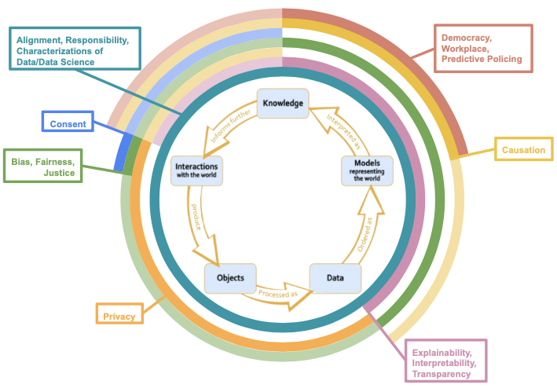

The Data Science Ethics Lifecycle
connecting the most common ethics topics from the data science ethics syllabi to the final data science lifecycle
Common Syllabi Topics
‘Most Common’ = has a count of 3 or more
Ethics Topics and the Data Science Lifecycle
The rings with less opacity denote areas where there seems to be substantial overlap between common topics and the data science stage though these considerations are not “paradigmatic” ethical issues.

Lifecycle Connections
On this page, we offer paradigmatic and less conventional examples that demonstrate how the most frequent ethics topics from the syllabi arise throughout the data science lifecycle. The subsections are ordered from the first paradigmatic connection between the ethics topic and a data science stage, starting from ``interactions with the world” and then proceeding counterclockwise around the data science lifecycle. When understanding why ethical issues arise and are salient in a particular case, it is often beneficial to reflect on our intuitions in the case (e.g., that plagiarizing a school paper is morally impermissible). However, as also seen in the plagiarism case, explaining our intuitions involves developing a well-defended moral principle which often requires us to critically examine the validity of various moral principles (e.g., that deception is always morally impermissible) and then either scrap or revise the moral principles accordingly. Given the nuances of the ethical issues that arise in data science and ongoing discussions in philosophy about them, we direct the reader to our website’s reading lists (linked in each subsection’s header) to further explore the intricacies and applications of the ethics topics to data science.
Characterizations of Data and Data Science
As mentioned on the data science lifecycle page, the choice of how to characterize data and data science is value-laden as it reflects a particular interpretation of knowledge from data and data models. For instance, if we view data as a direct representation of the world, we might overlook biases or other ethical issues that arise during the collection or data processing stages. On the other hand, if we view data and data models as context-dependent, then we can acknowledge that ethical issues, like algorithmic bias, can arise during the data collection and processing stages. In turn, characterizations of data and data science influence every stage of the data science lifecycle.
Alignment
Alignment focuses on whether (and if so, how) our moral values are reflected in our current data science practices. Given that potentially morally charged decision points exist throughout data science (see what is data science ethics?), alignment is also an important ethics topic at every stage of the data science lifecycle.
Responsibility
While both moral and legal responsibility are important considerations in data science, we focus here on moral responsibility. Again, an individual might be morally responsible for their behavior, even if they would not be legally responsible for it (e.g., an individual might be morally responsible for plagiarizing a school paper but not legally responsible for it since the act of plagiarism is not against the law).
Paradigmatic Connection(s)
Discussions of moral responsibility in data science typically concern model deployment and “interactions with the world”. For example, Amazon was held morally responsible for deploying a hiring algorithm that was biased against female applicants (Dastin, 2018). Moral responsibility also arises when building data models. For instance, it seems reasonable to contend that if another company had created Amazon’s faulty hiring algorithm, then that company would also be morally responsible, alongside Amazon, for the biased results if they did not adequately define where the model should be used or who should use it.
There are also several case studies (in data science and beyond) where people are morally responsible for failing to obtain informed consent when collecting personal information (i.e., during “interactions with the world”). Some examples include the collection of HeLa cells1 and the commercialization of social media users’ data without obtaining their informed consent.2
Less Conventional Connection(s)
Though less commonly thought about, moral responsibility is also relevant during data processing (i.e., between “interactions with the world” and “data”). Specifically, it seems reasonable to hold data scientists morally responsible for the moral harms that arise from their data cleaning or storage practices. For example, if a data scientist stored personal data in a foreseeably faulty database, they would be at least partially morally responsible for any data leakages. Similarly, if the data scientist who was supposed to remove identifiers from the data was negligent, they would have (at least some) moral responsibility for the ethical repercussions that arise from the data not being adequately anonymized.3
Consent
Paradigmatic Connection(s)
Generally, when people think about informed consent in data science, they think about it during data collection (i.e., during ``interactions with the world”). That is, they consider whether the researcher or company has gathered informed consent when collecting people’s data. When researchers or companies get permission to collect people’s data, they also typically ask for consent to use it in a specific capacity later in the data science lifecycle (e.g., to build data models, store it in a database, or share with another company) given that obtaining a person’s informed consent is often essential for respecting their autonomy (Eyal, 2019).
Less Conventional Connection(s)
While less conventional, issues of consent also arise when applying insights from data models to future interactions with an individual, even if none of the individual’s data was used to build (or test) the data model. For example, suppose that a job site creates a data model that predicts that people from a certain demographic group are more likely to interact with a nannying job post than a construction job post. A new person from that demographic group then engages with the job site. Based on the predictive model, the social media platform shows the nannying job post to them instead of the construction job post.4 It seems important for the social media company to obtain the new user’s informed consent to use the predictive model on them, given that the predictive model undermines their autonomy in some capacity. Namely, using the data model on the new user restricts them from seeing that certain jobs are available.5
Privacy
Paradigmatic Connection(s)
Privacy is often connected to data science between interactions with the world and data processing. For example, university researchers posted profile data from the OkCupid dating site to an open data repository in 2016 (Woollacott, 2016). The data revealed intimate details about more than 70,000 users, including their usernames, sexual preferences, and personal opinions (Woollacott, 2016). Around 30% of the profiles were identifiable, meaning that those profiles could be connected to their real name (Woollacott, 2016). The researchers’ violation of the OkCupid users’ privacy seems morally problematic. As explained in Roessler & DeCew (2023), one reason why violating users’ privacy is morally problematic in this case is that it endangers the users’ abilities to control their relationships with others. That is, privacy is a way of ``modulating” our degrees of friendship with others, i.e., we would share more personal details about our life with someone we are better friends with (Roessler & DeCew, 2023). Additionally, some philosophers contend that the right to privacy is grounded in the right to autonomy (e.g., rights over one’s personal property and own body) (Roessler & DeCew, 2023).
Less Conventional Connection(s)
Worries about privacy can resurface when using insights from a data model to inform our future interactions with the world. For instance, suppose that a company’s data model predicts that an applicant is unqualified for a job. The company decides to share this prediction with a list of other major employers. There is an intuitive sense in which publicizing the model’s prediction to several other employers seems morally problematic, given that it entails sharing personal information about the applicant without their consent. However, would it be unethical for a boss at one company to share their belief that the person is unqualified for a job with their friend, who is a boss at another major company? It seems to be less morally tenuous even though the friend sharing their evaluation of the applicant with their friend still entails sharing personal information about the applicant without their consent. To explain our difference in intuitions in these two cases, we need a well-defended moral principle about what grounds someone’s right to privacy.
One justification for our difference in intuitions between the two cases is that there is a difference in scalability and damage in the algorithm versus the friend case. In her book, Weapons of Math Destruction, Cathy O’Neil breaks down different algorithms in terms of their opacity, scalability (pernicious feedback loops), and damage (ability to grow exponentially). She puts forward a moral principle to determine whether an algorithm is a Weapon of Math Destruction, in which case, she argues, it should not be used (O’Neil, 2016). Avoiding pernicious feedback loops is one such strategy to ground privacy concerns and explain the difference in intuitions between the algorithm (which has a scalable pernicious feedback loop) and the friend case (which doesn’t).
Bias, Fairness, Justice
Paradigmatic Connection(s)
There are many cases of biased, unfair, and unjust data models. One such example is Amazon’s now-scrapped hiring algorithm, which was critiqued for being biased against female applicants (Dastin, 2018). The algorithm’s goal was to identify ‘ideal candidates’ for technical positions at Amazon from hundreds of resumes submitted. Here, ‘ideal candidates’ were considered those whose resumes were most similar to resumes that had been previously submitted to Amazon over the last ten years. However, given that the technology industry is heavily male-dominated, most of these resumes came from male applicants, and consequently, the algorithm’s predictions turned out to be biased against women (Dastin, 2018). For example, the algorithm penalized resumes with the word ‘women’s’ in it (e.g., ‘women’s cross country team captain’ or ‘women’s union staff member’) as well as graduates from two all-women’s colleges (Dastin, 2018). Amazon’s algorithm seems unfair to female applicants. Namely, the algorithm wrongfully discriminated against female applicants by using a success metric (i.e., the similarity between the applicant’s resume and previously submitted resumes) that systematically overlooks well-qualified female applicants in virtue of their gender identity. However, as discussed in what is data science ethics?, it is unclear how to evaluate fairness in models like Amazon’s now-scrapped hiring algorithm and, with that, how exactly to mitigate any unfairness in such models.
Moreover, it seems conceivable that even if Amazon improved the success metric, its hiring algorithm would still be biased against female applicants in virtue of there being a gender bias in the training data (i.e., model’s input). The saying “garbage in, garbage out” encapsulates the commonly seen connection between bias, fairness, justice, and data modeling. That is, the saying “garbage in, garbage out” notes that if the data used to build the data model was biased against group X, then the model’s predictions would be biased against group X and could lead to unfair (and/or unjust) outcomes for group X if the model’s predictions influence decision-making.
Beyond data modeling, issues of bias, fairness, and justice also emerge during ``interactions with the world”. For instance, suppose a data scientist wants to model the average number of hours in the hospital after giving birth but only surveys white females. We would consider the dataset biased towards white women and consequently be cautious about generalizing the data scientist’s findings to people in the population who are not white women.
Less Conventional Connection(s)
However, issues of bias, fairness, and justice are crucial to consider at every stage of the data science lifecycle. For example, we might completely drop observations with missing values when processing the data. Yet, dropping those values can create biases in our data and subsequent analyses if they are not missing at random.6 Bias, fairness, and justice can also come into play when insights from a data model influence our future interactions with our world. For instance, it seems unfair (and/or unjust) to only give a nannying job ad to women because an algorithm found that women were substantially more likely than men to click on nannying job ads.
Explainability, Interpretability, Transparency
A common complaint about data models, particularly more advanced ones, is that they are black boxes. In this subsection, we focus mainly on the connections between the lifecycle and explainability. However, the connections are similar to those for transparency and interpretability, given all three concepts share the common goal of making data models and their predictions more understandable to stakeholders.
Paradigmatic Connection(s)
In the model deployment stage, where predictions about individuals or groups are made, a reasonable ethical expectation is that the model is understandable to human stakeholders. One reason for this expectation is that if the model is explainable, then we can verify that the model is fair. For example, if a convicted person’s bail is set (using an algorithmic recommendation) higher than they think it should be, it seems fair for the individual to demand and expect an explanation for the algorithm’s recommendation in order to ensure that sensitive social attributes like race, gender, or socioeconomic status did not impact the algorithm’s prediction. Similarly, stakeholders might also demand that the algorithm’s parameters be transparent in order to see which variables influence the model’s predictions and, in particular, see whether the algorithm uses sensitive social attributes to make its predictions. The ethical expectation that data models are understandable to human stakeholders is often referred to as the “right to an explanation.” This expectation is echoed in legal documents such as the European Union’s General Data Protection Regulation (GDPR), which states that an individual has the right to ``obtain an explanation” for any automated decision made about them (Goodman & Flaxman, 2017).
Less Conventional Connection(s)
While not mentioned as often, the “right to an explanation” is also important to consider when insights from a data model influence future interactions with the world. For instance, suppose that law enforcement starts heavily policing Neighborhood A relative to Neighborhood B because a data model found that the people in Neighborhood A are more likely to be convicted of a crime than the people in Neighborhood B. It seems that the people in Neighborhood A have a right to understand why they are being policed more than the people in Neighborhood B. Like in the paradigmatic example, one reason for why the people in Neighborhood A seem to have a “right to an explanation” in this case is that explainability is often necessary to ensure that the model does not use sensitive social attributes to make its predictions. However, some philosophers note that human decision-makers are also black boxes with respect to how they arrive at their decisions. For instance, even if a court judge gives justification for their sentencing, it is not clear that the reason they give is the only reason for their decision or even is a reason for their decision at all (e.g., people can be subconsciously influenced by implicit biases) (Günther & Kasirzadeh, 2022). As such, one question within philosophy is whether we have a “right to an explanation” when it comes to data models, and if so, why do we have such a “right to an explanation” when it seems to hold algorithms to a higher standard than human decision-makers?
Causation
Paradigmatic Connection(s)
As early as introductory statistics courses, “correlation does not imply causation” is emphasized. The topic of causation is prominent in many data science ethics courses because mistakenly claiming causation can be morally pernicious when attempting to interpret knowledge from a data model. Most current data models can only identify correlations between the predictor variables and the response variable rather than causal relationships (n.b., there are also centuries worth of philosophical debates about how to define causation).7
Incorrectly interpreting causation between variables can have substantial moral repercussions during model deployment. For instance, suppose we have a logistic model that predicts whether a person will drop out of high school. Our model finds a positive association between having a first language other than English and the expected probability of dropping out of high school. There are several confounding variables, like socioeconomic status and availability of academic opportunities, which explain the identified positive association. However, imagine that a person sees our model and, from it, concludes that having a first language other than English causes a higher probability of dropping out of high school. As a result of mistakenly drawing causal claims from the model, they might advocate for English-only policies or develop prejudiced beliefs against people whose first language is not English.
Less Conventional Connection(s)
Moral implications surrounding causation can also arise when building causal inference models. For example, imagine there is a group of researchers who want to understand how a patient’s race influences their wait time in an emergency room. Answering the wait time question would involve evaluating whether the following counterfactual is true: if a patient was a member of racial group X instead of racial group Y, then their ER wait time would be different. One way the researchers might try to evaluate this counterfactual is by collecting data that contains background information (e.g., race) and the wait time at the hospital for each patient. The data would be used to estimate how changing only the ‘race’ variable for a patient would change their wait time. Yet, Atoosa & Smart (2021) note that changing only the ‘race’ variable endorses an essentialist view of race that fails to acknowledge how race is socially constructed. Essentialist views of variables like race are harmful because they ignore the complex social, historical, and political factors that shape individuals’ experiences. As a result, essentialist views can often lead to overgeneralizations about social groups and even wrongful discrimination against them (Phillips, 2010). Worries about how to thoughtfully conduct causal inference on social categories point to the importance of reflecting on philosophical questions, like what constitutes a specific social category (e.g., race, gender, sexuality, etc.) during model building.
Democracy, Workplace, Predictive Policing
Paradigmatic Connection(s)
Democracy, workplace, and predictive policing are all settings where data models are used and have exceptionally high moral stakes. As such, case studies related to democracy, workplace, and predictive policing are very common in the collated data science ethics syllabi and reading lists. Usually, when democracy, workplace, and predictive policing case studies are referenced, the focus is on model deployment. For instance, COMPAS is often brought up because it is deployed in a setting with high moral stakes, i.e., in US courtrooms to aid judges in making decisions about bond amounts and sentencing lengths for defendant (Angwin, Larson, Kirchner, & Mattu, 2016).
Yet, while there are moral implications for deploying data models in democracy, workplace, and predictive policing settings, it does not seem that creating such data models is inherently morally problematic. For example, suppose that a civil rights group creates an algorithm to predict a defendant’s likelihood of being convicted (like COMPAS does) but only uses the model to show that the criminal justice system is racially biased against Black defendants. Intuitively, building such a data model is not morally problematic. Rather, data models that predict a defendant’s recidivism risk are morally problematic when they are deployed in such a way that the model’s predictions impact people’s beliefs about a defendant’s recidivism risk and court outcomes.
The ethical theory of consequentialism can explain why the model’s deployment is relevant to its moral evaluation. According to consequentialism, only the consequences of an action ought to influence our moral assessment of it (Sinnott-Armstrong, 2023). In the civil rights group and COMPAS examples, the consequences are different. COMPAS is being used to set bond amounts, sentence length, and parole, whereas the civil rights group algorithm is not being used in such a capacity. Another relevant difference between the civil rights group algorithm and COMPAS is that the civil rights group algorithm works against existing injustice rather than compounding it by aiming to elucidate the existing racial bias within the criminal justice system. Philosophy helps locate what exactly is morally problematic in a specific case (e.g., is it the data model’s predictions in themselves or how the model is deployed?), thereby helping us make our data science practices more ethical.
Less Conventional Connection(s)
Interpreting knowledge from model predictions can also lead to morally problematic interactions with the world within democracy, workplace, and predictive policing settings. For example, in her book, Weapons of Math Destruction, Cathy O’Neil considers PredPol, an algorithm that uses historical crime data to predict where crimes are most likely to occur. When police use PredPol, they can target neighborhoods based on where “nuisance” crimes (e.g., vagrancy, aggressive panhandling, selling and consuming small quantities of drugs) occur, which are unlikely to be recorded when there is not a police officer present . However, also notes that “nuisance” crimes are also much more common in impoverished neighborhoods. When the “nuisance” crime data is put into the predictive model, more police patrol impoverished neighborhoods, and arrests in those neighborhoods are more likely to occur. This creates a pernicious feedback loop because the policing of impoverished neighborhoods leads to arrests in the neighborhood, which ultimately justifies more policing of those neighborhoods (O’Neil, 2016). As a result, more people are arrested for “nuisance” crimes, the majority of which come from impoverished neighborhoods and are Black or Hispanic due to racial segregation in cities (O’Neil, 2016). Thus, using predictive policing models to inform future interactions with the world (i.e., where to send police) can create pernicious feedback loops that exacerbate existing racial injustices in the criminal justice system.
References
Angwin, J., Larson, J., Kirchner, L., & Mattu, S. (2016). Machine Bias. https://www.propublica.org/article/machine-bias-risk-assessments-in-criminal-sentencing; ProPublica.
Atoosa, A. K., & Smart, A. (2021). The use and misuse of counterfactuals in ethical machine learning. Proceedings of the 2021 ACM Conference on Fairness, Accountability, and Transparency, 228–236. New York, NY, USA: Association for Computing Machinery. https://doi.org/10.1145/3442188.3445886
Bogen, M. (2019). All the ways hiring algorithms can introduce bias. https://hbr.org/2019/05/all-the-ways-hiring-algorithms-can-introduce-bias.
Callaway, E. (2013). Deal done over HeLa cell line. Nature, 500(7461), 132–133. https://doi.org/10.1038/500132a
Dastin, J. (2018). Amazon scraps secret AI recruiting tool that showed bias against women. https://www.reuters.com/article/us-amazon-com-jobs-automation-insight-idUSKCN1MK08G; Reuters.
Eyal, N. (2019). Informed consent. In E. N. Zalta (Ed.), The Stanford encyclopedia of philosophy (Spring 2019). https://plato.stanford.edu/archives/spr2019/entries/informed-consent/; Metaphysics Research Lab, Stanford University.
Goodman, B., & Flaxman, S. (2017). European Union regulations on algorithmic decision making and a “right to explanation”. AI Magazine, 38(3), 50–57. https://doi.org/10.1609/aimag.v38i3.2741
Günther, M., & Kasirzadeh, A. (2022). Algorithmic and human decision making: For a double standard of transparency. AI and Society, 37(1), 375–381. https://doi.org/10.1007/s00146-021-01200-5
Kang, H. (2013). The prevention and handling of the missing data. Korean Journal of Anesthesiology, 64(5), 402. https://doi.org/10.4097/kjae.2013.64.5.402
O’Neil, C. (2016). Weapons of math destruction. Crown Publishing Group.
Phillips, A. (2010). What’s wrong with essentialism? Distinktion: Scandinavian Journal of Social Theory, 11, 47–60. https://doi.org/10.1080/1600910X.2010.9672755
Roessler, B., & DeCew, J. (2023). Privacy. In E. N. Zalta & U. Nodelman (Eds.), The Stanford encyclopedia of philosophy (Winter 2023). https://plato.stanford.edu/archives/win2023/entries/privacy/; Metaphysics Research Lab, Stanford University.
Sinnott-Armstrong, W. (2023). Consequentialism. In E. N. Zalta & U. Nodelman (Eds.), The Stanford encyclopedia of philosophy (Winter 2023). https://plato.stanford.edu/archives/win2023/entries/consequentialism/; Metaphysics Research Lab, Stanford University.
Talebi, S. (2021). Causal discovery. https://towardsdatascience.com/causal-discovery-6858f9af6dcb.
Woollacott, E. (2016). 70,000 OkCupid profiles leaked, intimate details and all. https://www.forbes.com/sites/emmawoollacott/2016/05/13/intimate-data-of-70000-okcupid-users-released/?sh=2ac42f2f1e15; Forbes.
Footnotes
In 1951, cervical cancer cells from Henrietta Lacks were taken without her knowledge. Her cells and cell line, known colloquially as HeLa cells, have been widely used in science ever since (Callaway, 2013).↩︎
See Andreotta, Kirkham, & Rizzi (2021) for issues with informed consent and social media.↩︎
See Woollacott (2016) for an example of how moral responsibility can be relevant when failing to remove identifiers from data.↩︎
This example is partially inspired by the examples in Bogen (2019).↩︎
See Eyal (2019) for reasons beyond respecting a person’s autonomy why obtaining informed consent is morally important.↩︎
This example is partially inspired by the discussion in Kang (2013).↩︎
Also, see examples of how current data models are not yet able to accurately identify causation in Talebi (2021).↩︎